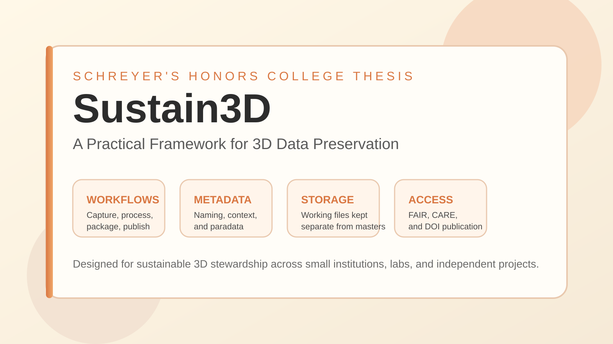

Schreyer's Honors College
Filler text for this publication goes here. I can add the full description once you share how you want it explained.
View publication media



I'm a senior at Penn State Behrend, majoring in Digital Media, Arts, and Technology with a minor in Game Development. I have a passion for digital creation, and I'm currently working as an Immersive Administrator at the Virtual and Augmented Reality (VAR) Lab at Penn State Behrend.
I'm always seeking ways to improve my skills, with the goal of working in an environment that values efficiency, creativity, and digital innovation. I'm eager to apply my knowledge to any job or business.
My work is driven by an interest in designing and developing practical, low-cost solutions to real problems. I focus on using accessible tools and thoughtful design to make technology more usable, sustainable, and impactful—especially for individuals, small organizations, and communities without access to large resources.
I grew up in Clarion County, Pennsylvania, but have strong hopes to explore, travel, and continue learning through new experiences.
If you'd like to know more about my work and experience, feel free to check out my resume below.
Filler text for this publication goes here. I can add the full description once you share how you want it explained.

Presentation materials, event photography, and a recorded talk from the Teaching and Learning Technologies Symposium.


"Recognizes undergraduates with demonstrated research proficiency and strong potential for independent scholarly work"
"Recognizes an undergraduate student for possessing outstanding qualities of character, scholarship, leadership, and citizenship and for contributing to programs and services that positively influence fellow students and enhance the prestige and well-being of their campus and the reputation of the University as a whole"
Recognized for Routine Rust in the Spring Yahn Art Show digital art category.